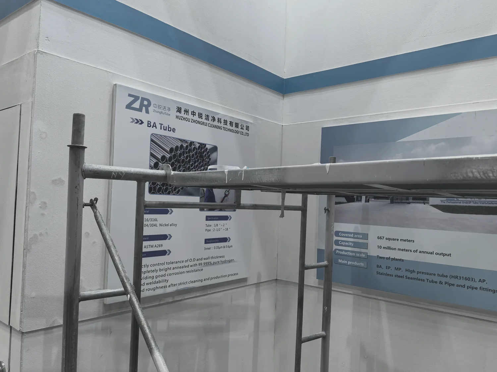
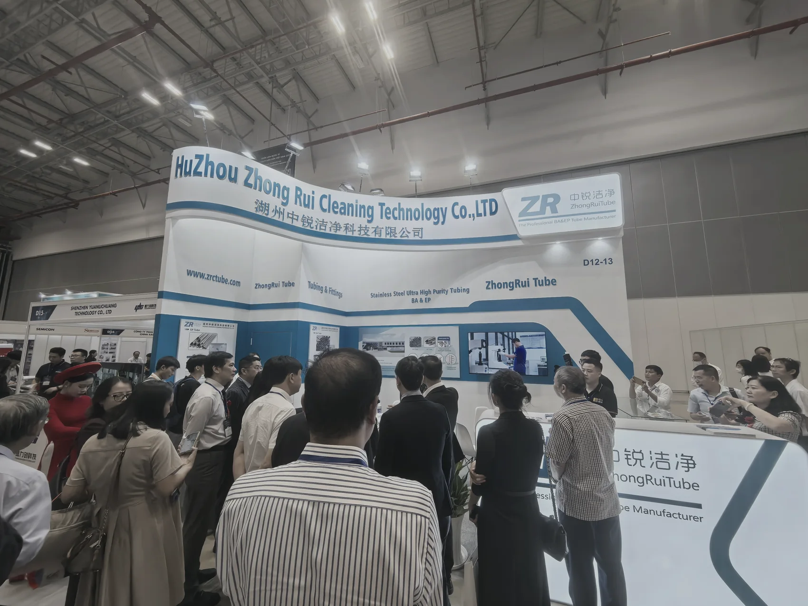
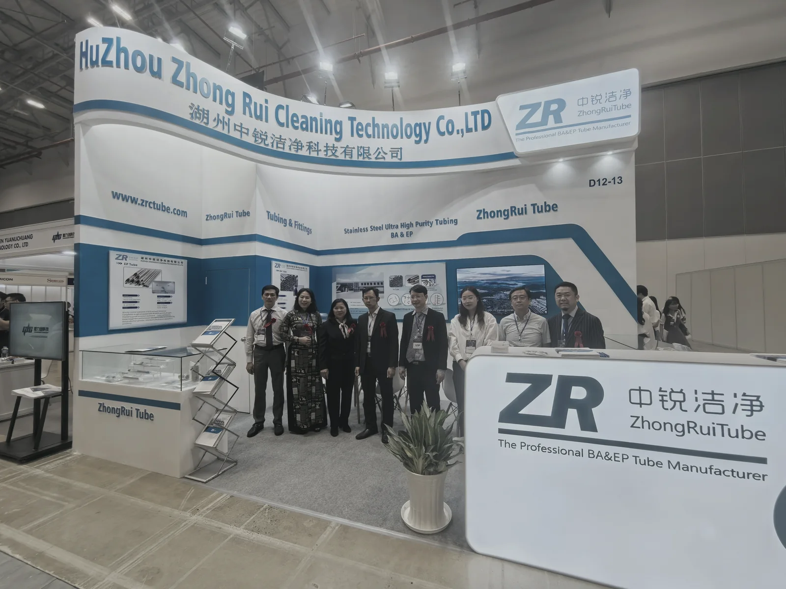
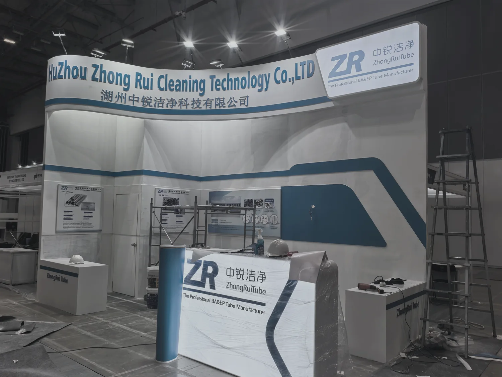

PRODUCT COMMUNICATION & VISITOR ENGAGEMENT
A clean and structured exhibition environment presents high-purity tubing expertise while keeping the foreground open for professional exchange.
清晰而有秩序的展览环境传达高纯洁净管材的专业能力，同时为前场商务交流保留开放空间。
Không gian triển lãm sạch và có cấu trúc truyền đạt chuyên môn về ống độ tinh khiết cao, đồng thời giữ khu vực phía trước mở cho trao đổi chuyên nghiệp.
CLARITY, TRUST & ENGAGEMENT
A continuous blue-gray graphic line organizes technical information, screens and samples. The restrained palette supports trust while the open foreground accommodates a dense visitor flow.
连续的灰蓝色图形线组织技术信息、屏幕与样品；克制的色彩建立可信感，开放前场则容纳高密度观众交流。
Đường đồ họa xanh xám liên tục tổ chức thông tin kỹ thuật, màn hình và mẫu vật. Bảng màu tiết chế tạo cảm giác tin cậy, trong khi phần phía trước mở cho lưu lượng khách lớn.





